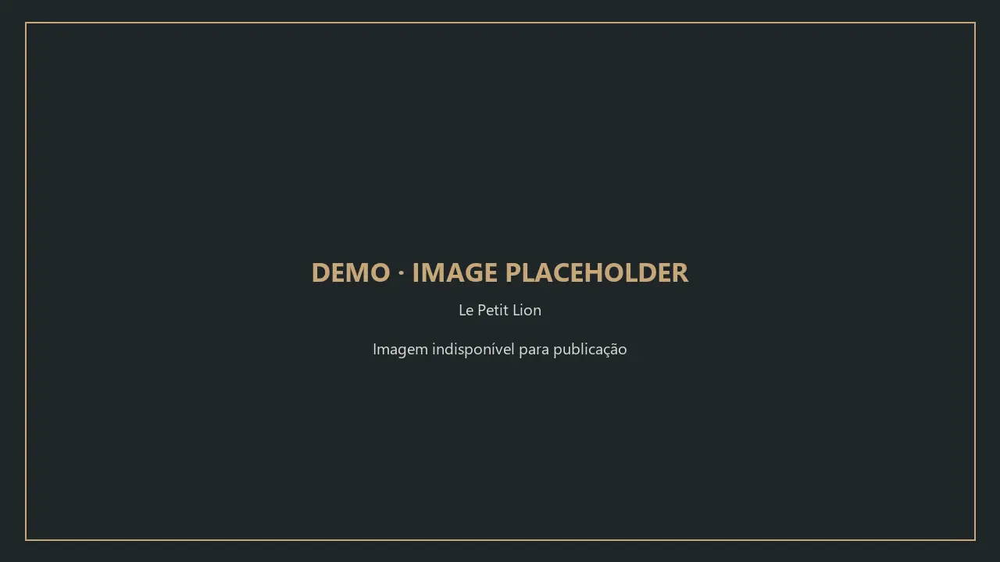
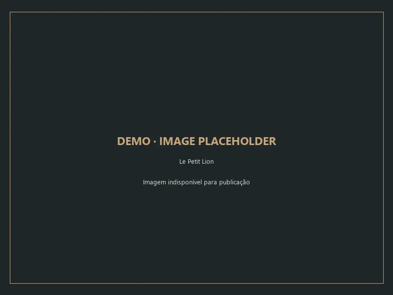

Uma bebida,
uma partida.
Na rue Haute 232, nas Marolles: um bar de bairro, uma mesa de sinuca e um pebolim.
O bar, a sinuca, o pebolim.
Três cantos, um mesmo salão e um fliperama. Escolha onde ficar.

O balcão. Imagem placeholder demonstrativo.
O bar
“Entre os últimos estaminets típicos de Bruxelas.”
ULB Journalisme, 2022
Sinuca
Mesa de sinuca no salão, para uma partida com uma bebida.
Preços e disponibilidade: pergunte no balcão.
Pebolim
Pebolim no salão, para uma partida entre amigos.
Preços e disponibilidade: pergunte no balcão.
Minissinuca
Encaçape as três bolas coloridas com o menor número de tacadas.
Com o mouse ou o dedo: arraste a partir da mesa, para trás, como um estilingue, e solte para tacar. Um toque só ajusta a mira. Ou use os controles abaixo.
Tacadas: 0 · Na mesa: 3 bolas
Em imagens
Fotografias de prévia local substituídas por placeholders gráficos nesta versão pública. o autor aparece ao abrir cada imagem.


232 rue Haute Marolles · 1000 Bruxelas
Horários
Até as 2 h no fim de semana
| Segunda – quinta | 10 h – 23 h |
|---|---|
| Sexta | 10 h – 2 h |
| Sábado | 11 h – 2 h |
| Domingo | 11 h – 23 h |
Segundo a ficha do Google Maps, consultada em 11/11/2026; não confirmados pelo bar. Outras fontes divergem (Privateaser: sábado a partir das 10 h, domingo a partir das 10 h 30). Feriados: horários possivelmente diferentes.
